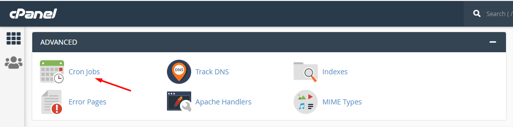
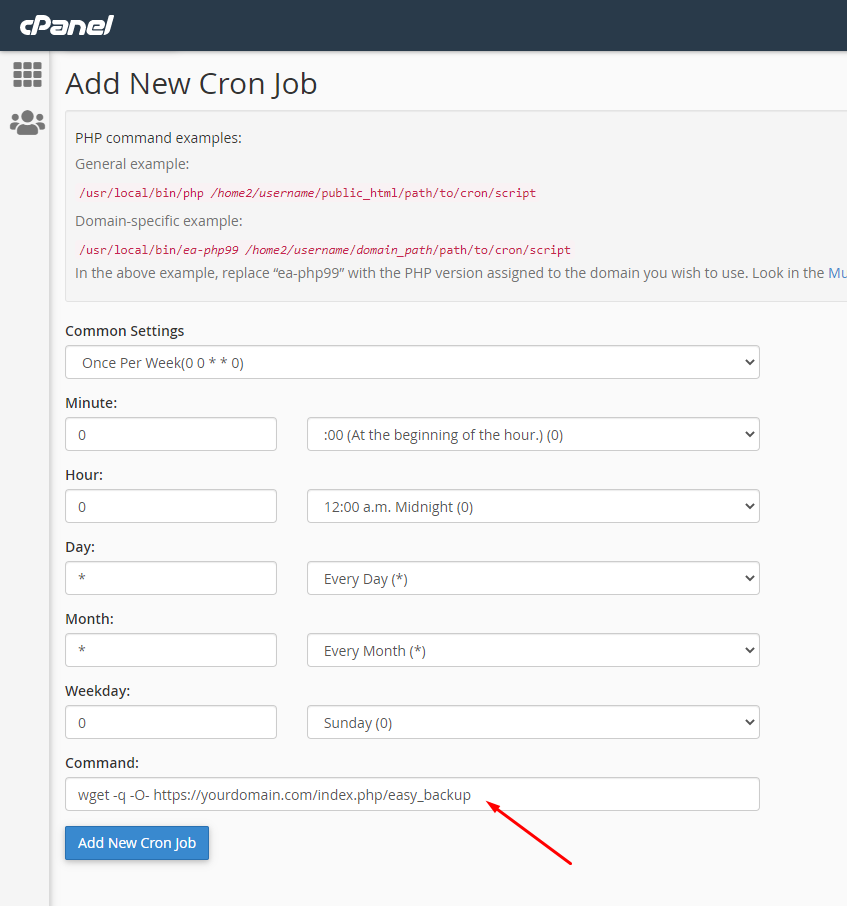
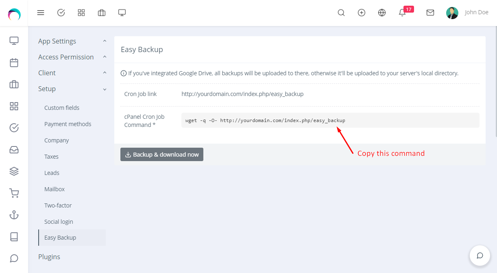

Installation
Quick Installation Guide
- Go to Settings > Plugins.
- Install the Easy-Backup-plugin-for-RISE-CRM.zip which you have downloaded from the Envato Market with a valid purchase code.
- If everything is OK, it'll show a success message.
- Activate the plugin from the option dropdown.
Features
- Get the backup of your whole project and database.
- Get regular backups on Google Drive or project's directory (if Google Drive isn't integrated).
- Download instant backup.
Settings
You'll get the Backup settings in Settings > Setup > Easy Backup.
You can setup a cron job in your server to get regular backups or download an instant backup with Backup & download now button.
Setup Cron job in cPanel
Please follow these steps to enable cron job in your cPanel:
-
Go to your cPanel and locate Cron Jobs under ADVANCED tab.
 -
You'll find a form like this.
Please note that you can setup the interval time as you want the backup. This is a demo to set weekly cron job.
 -
Go to RISE Settings > Setup > Easy Backup.
 - Copy the required command from there and add to the form.
Upgrading Guide
Please note that you can only download the updates if you had a valid purchase code on installation.
There is a very easy way to update your application.
To install any updates go to Settings > Plugins > Easy Backup > Dropdown > Updates. The download will be start automatically once any new update is available. Once the download is completed you can install the updates by clicking on the link. That’s all!
Thanks
Thanks again for purchasing this plugin.
If you have any query or suggestion, please send an email from Support page.
Best wishes
ClassicCompiler Team